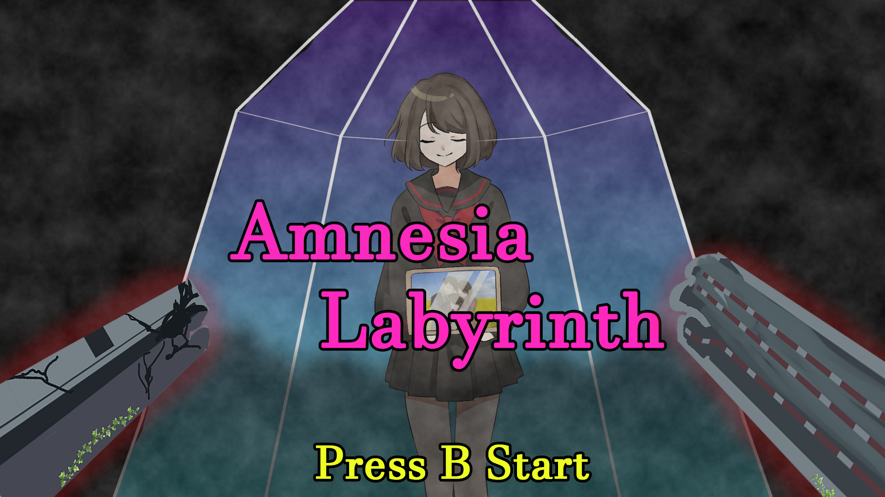
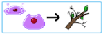
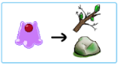
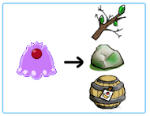

概要

ジャンル
協力タワーディフェンス的シューティングゲーム
制作期間
5日間(2025/6/30-2025/7/4)
製作人数
8名(プランナー2名、プログラマー1名、デザイナー5名)
担当箇所
プレイヤー、敵、アイテム、コア、線分との当たり判定
開発環境
C言語、C++、Visual Studio、DXライブラリ
ゲームプレイ動画
どんなゲーム？
『Amnesia_Labyrinth』は、父親と母親を操作し、記憶を失った娘を守りながら家族の記憶を取り戻す、2人協力タワーディフェンス的シューティングです。
上空から降り注ぐのは、娘の心に刻まれた“トラウマの言葉”。2人は線でつながれた状態で移動し、言葉を避けるか、具現化した敵を攻撃して退けます。
記憶の欠片は、プレイヤー自身または2人を結ぶ線で触れることで獲得可能。
集めた欠片を2人同時にチャージすると、失われたHPと崩れた背景が修復され、家族の思い出が少しずつ蘇ります。
協力して5つのハートを取り戻せば勝利。互いの位置取りと息を合わせることが、娘を救う鍵となります。
企画書はこちらアピールポイント
線分を利用した当たり判定
プレイヤーの移動処理では、マスの座標を直接描画位置に反映するのではなく、移動先となる座標と実際に描画する座標を分けて管理しました。
移動先が決まった後、描画用の座標を一定の速度で少しずつ移動させることで、マスからマスへ瞬間的に移動するのではなく、滑らかに移動するよう実装しています。
マス単位で移動するゲームでありながら、プレイヤーが一度に位置を切り替えるのではなく、移動先まで徐々に移動することで、スライムらしい滑らかな移動感を表現しました。
スライムが移動したときの様子
パンチ攻撃
プレイヤーのHPに応じて、押すことができるものの種類を制御するシステムを実装しました。
HPが30以上では軽いもの・中くらいのもの・重いものすべてを押すことができ、20～29では軽いものと中くらいのもののみ、19以下では軽いもののみを押せるようにしています。
実装では、ものの種類を判定したうえでプレイヤーの現在HPを参照し、HPの範囲に応じて押せるかどうかを制御しました。
HPが減少するほど動かせるものが少なくなることで、HPの管理がステージ攻略にも影響する仕組みにしています。

プレイヤーが押せる軽いもの

プレイヤーが押せる中くらいのもの

プレイヤーが押せる重いもの
敵の状態変化
プレイヤーのHPに応じて、スライムの見た目を4段階で切り替える処理を実装しました。
HPが30以上では大きなスライム、20～29では中くらいのスライム、6～19では小さなスライム、5以下ではさらに異なる見た目に切り替わるようにしています。
HPの減少に合わせてスライムの見た目が変化することで、数値だけでなく、視覚的にもプレイヤーの状態を確認できるよう工夫しました。
小さなスライム
中くらいのスライム
大きなスライム
瀕死のスライム